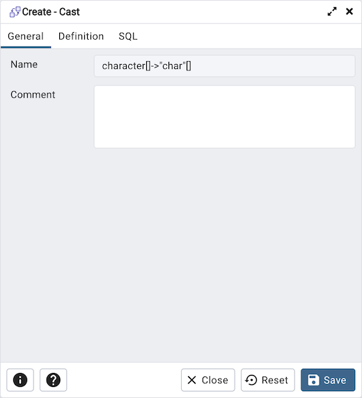
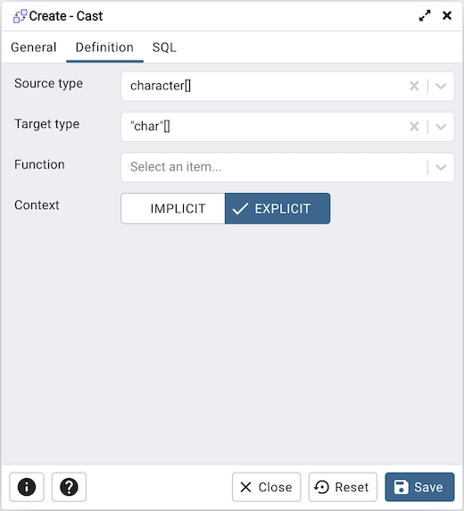
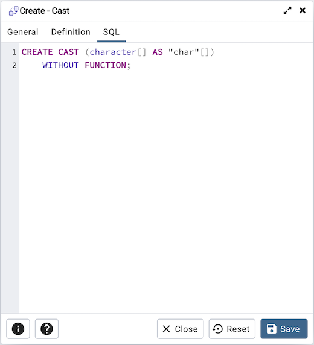

Cast Dialog¶
Use the Cast dialog to define a cast. A cast specifies how to convert a value from one data type to another.
The Cast dialog organizes the development of a cast through the following dialog tabs: General and Definition. The SQL tab displays the SQL code generated by dialog selections.
Use the fields in the General tab to identify the cast:
The Name field is disabled. The name that will be displayed in the pgAdmin tree control is the Source type concatenated with the Target type, and is generated automatically when you make selections on the Cast dialog Definition tab.
Store notes about the cast in the Comment field.
Click the Definition tab to continue.
Use the fields in the Definition tab to define parameters:
Use the drop-down listbox next to Source type to select the name of the source data type of the cast.
Use the drop-down listbox next to Target type to select the name of the target data type of the cast.
Use the drop-down listbox next to Function to select the function used to perform the cast. The function’s result data type must match the target type of the cast.
Select Context toggle to Implicit if the cast is implicit. By default, a cast can be invoked only by an explicit cast request. If the cast is marked Implicit then it can be invoked implicitly in any context, whether by assignment or internally in an expression.
Click the SQL tab to continue.
Your entries in the Cast dialog generate a SQL command (see an example below). Use the SQL tab for review; revisit or switch tabs to make any changes to the SQL command.
Example
The following is an example of the sql command generated by user selections in the Cast dialog:
Click the Info button (i) to access online help.
Click the Save button to save work.
Click the Close button to exit without saving work.
Click the Reset button to restore configuration parameters.